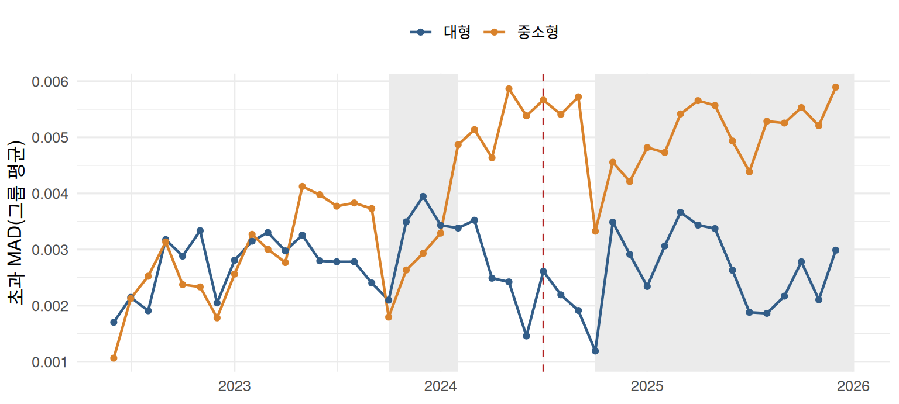

library(ggplot2)
set.seed(20240719)
theme_set(theme_minimal(base_size = 12))
col_main <- "#325d88"; col_alt <- "#d9822b"
노트연재: 워시 트레이딩 논문의 검정법
이 연재는 가상자산이용자보호법 시행이 국내 가상자산시장의 워시 트레이딩에 미친 영향(이준호·최범전, 2026, working paper)에서 쓰인 통계적 방법을 모의실험과 함께 자세히 설명한다. 예시는 모두 모의 자료이다. 첫 번째 지표인 벤포드 적합도는 별도의 글 벤포드 적합도 검정에서 다룬다.
워시 트레이딩을 재는 세 지표(벤포드 초과 MAD, 꼬리지수, 변화점 수)는 모두 종목–월 단위의 값이다. 가상자산이용자보호법 시행이 국내 가상자산시장의 워시 트레이딩에 미친 영향(이준호·최범전, 2026, working paper)은 이 값들을 법 시행 전후로 비교할 때 세 가지 비모수 도구를 쓴다.
- Wilcoxon 부호순위 검정: 그룹 안에서 종목별 시행 전후 차이를 검정한다.
- Wilcoxon 순위합 검정: 두 그룹의 변화 폭을 비교하거나, 한 종목의 시행 전 월별 값과 시행 후 월별 값을 비교한다.
- Holm 보정: 여러 사건에서 같은 검정을 반복할 때 오류율을 통제한다.
이 글에서는 세 도구의 원리를 차례로 정리한 뒤, 마지막 절에서 34개 종목의 모의 패널로 논문의 비교 절차를 처음부터 끝까지 따라가 본다.
1. Wilcoxon 부호순위 검정
검정통계량
그룹 안의 시행 전후 비교는 종목 \(i\) 의 시행 전후 월평균의 차이 \(d_i=\bar Y_i^{post}-\bar Y_i^{pre}\), \(i=1,\ldots,n\) 에 대한 검정이다. 대형 그룹은 \(n=8\), 중소형 그룹은 \(n=26\) 으로 표본이 작고 지표의 분포가 치우쳐 있어, 정규성에 의존하는 대응표본 \(t\) 검정 대신 순위를 이용한다. \(|d_i|\) 의 순위를 \(R_i\) 라 하면 통계량은
\[ W^+=\sum_{i=1}^nR_i\cdot\mathbf 1(d_i>0) \tag{1}\]
이다. 귀무가설은 “차이의 분포가 0을 중심으로 대칭”이다.
귀무분포의 평균과 분산
귀무가설 아래에서 순위 \(1,\ldots,n\) 각각에 붙는 부호는 서로 독립이고 각각 확률 1/2로 양수이다. 따라서 \(W^+=\sum_{r=1}^nr\,B_r\) (\(B_r\sim\text{Bernoulli}(1/2)\), 독립)로 쓸 수 있고
\[ E[W^+]=\frac12\sum_{r=1}^nr=\frac{n(n+1)}4,\qquad \operatorname{Var}[W^+]=\frac14\sum_{r=1}^nr^2=\frac{n(n+1)(2n+1)}{24} \tag{2}\]
이다. 동순위가 있으면 평균 순위를 쓰고, 크기 \(t\) 인 동순위 묶음마다 분산에서 \((t^3-t)/48\) 을 뺀다. 차이가 정확히 0인 종목은 보통 제외한다.
정확 분포와 정규근사
\(2^n\) 가지 부호 조합이 모두 같은 확률을 가지므로 \(W^+\) 의 정확한 귀무분포는 열거로 구할 수 있다. \(n=8\) 개 종목이 모두 같은 방향으로 변하면 \(W^+=36\) 이고, 이런 결과는 \(2^8=256\) 가지 중 양쪽 끝의 두 가지뿐이므로 양측 정확 p값은 \(2/256\approx0.0078\) 이다. 논문은 연속성 보정과 동순위 보정을 포함한 정규근사를 썼는데, 이 경우
\[ z=\frac{36-18-0.5}{\sqrt{51}}\approx2.45,\qquad p\approx0.014 \]
가 된다. 논문 본문의 “대형 그룹은 8개 종목이 모두 같은 방향으로 변해도 p값이 약 0.014에 그친다”는 문장이 바로 이 계산이다.
d8 <- c(0.8, 0.3, 1.2, 0.5, 0.9, 0.2, 0.4, 1.1) # 8개 종목이 모두 같은 방향으로 변한 경우
c(정확 = wilcox.test(d8, exact = TRUE)$p.value,
정규근사 = wilcox.test(d8, exact = FALSE, correct = TRUE)$p.value) 정확 정규근사
0.00781250 0.01426619 R의 wilcox.test() 는 표본이 50개 미만이고 동순위가 없으면 기본으로 정확 분포를 쓰므로, 논문과 같은 값을 재현하려면 exact = FALSE 를 지정해야 한다. 어느 쪽이든 종목 수가 8개뿐이면 아무리 변화가 일관되어도 p값의 하한이 정해져 있다. 그래서 논문은 p값과 함께 “8개 중 7개 감소”처럼 증가·감소 종목 수를 함께 보고한다.
부호순위 검정은 변화 폭의 순위까지 반영하므로, 증가·감소 종목 수만 세는 부호 검정보다 일반적으로 검정력이 높다. 대신 “차이의 분포가 대칭”이라는 가정이 필요하다. 이 가정이 깨지면 부호순위 검정은 중위수가 아니라 차이의 대칭성 자체를 검정하게 된다.
2. Wilcoxon 순위합 검정과 독립성
검정통계량
순위합 검정(Mann–Whitney 검정)은 짝지어지지 않은 두 집단을 비교한다. 논문에서는 두 가지 용도로 쓰인다.
- 그룹 간 비교: 대형 8개 종목과 중소형 26개 종목의 변화 폭
- 개별 종목의 전후 비교: 한 종목의 시행 전 25개월 값과 시행 후 17개월 값
크기 \(n_1\), \(n_2\) 인 두 집단을 합쳐 순위를 매기고 첫째 집단의 순위 합을 \(W=\sum_{j=1}^{n_1}R_j\) 라 하면, 두 집단의 분포가 같다는 귀무가설 아래에서 순위의 모든 배치가 같은 확률을 가지므로
\[ E[W]=\frac{n_1(n_1+n_2+1)}2,\qquad\operatorname{Var}[W]=\frac{n_1n_2(n_1+n_2+1)}{12} \tag{3}\]
이다. \(U=W-n_1(n_1+1)/2\) 로 쓰면 \(U/(n_1n_2)\) 는 “첫째 집단에서 뽑은 값이 둘째 집단에서 뽑은 값보다 클 확률” \(P(X>Y)\) 의 추정량이 되어 해석이 쉽다. R의 wilcox.test() 가 보고하는 W 는 이 \(U\) 이다.
같은 종목의 월별 값은 독립이 아니다
방정식 3 은 “순위의 모든 배치가 같은 확률”이라는 교환가능성에 기댄다. 그런데 한 종목의 월별 지표는 서로 상관되어 있다. 이웃한 달끼리 비슷하면 시행 전 25개월과 시행 후 17개월이 각각 덩어리로 몰리고, 변화가 없어도 두 집단의 순위가 갈라지기 쉽다. 아래 실험은 변화가 전혀 없는 42개월 AR(1) 시계열을 25개월과 17개월로 나누어 5% 순위합 검정을 반복한 결과이다.
rs_size <- function(phi, R = 2000) {
mean(replicate(R, {
x <- if (phi == 0) rnorm(42) else as.numeric(arima.sim(list(ar = phi), 42))
wilcox.test(x[1:25], x[26:42], exact = FALSE)$p.value < 0.05
}))
}
knitr::kable(data.frame(`AR 계수` = c(0, 0.3, 0.6), `5% 검정의 실제 기각률` = sapply(c(0, 0.3, 0.6), rs_size),
check.names = FALSE), digits = 3)| AR 계수 | 5% 검정의 실제 기각률 |
|---|---|
| 0.0 | 0.046 |
| 0.3 | 0.138 |
| 0.6 | 0.297 |
자기상관이 0.6이면 실제 변화가 없어도 30% 안팎이 유의하게 나온다. 논문이 개별 종목의 순위합 검정 결과를 “독립성 가정을 충족하지 못하므로 참고 자료로 해석한다”고 명시한 이유이다. 반면 그룹 간 비교는 종목을 단위로 하므로, 종목 간 독립이 성립하는 한 이 문제는 훨씬 작다.
3. 여러 사건을 반복 검정할 때: Holm 보정
사건 분석은 8개 사건마다 대형 그룹, 중소형 그룹, 그룹 간 차이를 검정한다. 지표 하나에서 같은 질문을 8번 반복하므로, 각 검정을 5% 수준에서 하면 “적어도 하나가 우연히 유의할 확률”(가족별 오류율, FWER)은 5%보다 커진다. 검정들이 독립이라면 \(1-0.95^8\approx0.34\) 이다.
Holm (1979)의 단계적 보정은 다음과 같다. \(m\) 개의 p값을 작은 순서로 \(p_{(1)}\le\cdots\le p_{(m)}\) 이라 하면
- \(p_{(1)}\le\alpha/m\) 이면 첫째 가설을 기각하고 다음으로 간다. 아니면 멈춘다.
- \(p_{(2)}\le\alpha/(m-1)\) 이면 둘째 가설을 기각하고 다음으로 간다. 아니면 멈춘다.
- 이를 \(p_{(j)}\le\alpha/(m-j+1)\) 이 처음으로 깨질 때까지 반복한다.
보정 p값으로 쓰면 \(\tilde p_{(j)}=\max_{l\le j}\min\{1,(m-l+1)p_{(l)}\}\) 이다. 본페로니 보정(\(m\,p_j\))과 같은 FWER를 보장하면서 항상 그보다 덜 보수적이고, 검정 간 종속 구조에 대한 가정도 필요 없다. 아래는 가상의 8개 사건 p값에 두 보정을 적용한 예이다.
p_raw <- c(0.441, 0.183, 0.0004, 0.162, 0.003, 0.0002, 0.0009, 0.104)
knitr::kable(data.frame(사건 = paste0("사건 ", 1:8), 원래 = p_raw,
Holm = p.adjust(p_raw, "holm"), 본페로니 = p.adjust(p_raw, "bonferroni")),
digits = 4)| 사건 | 원래 | Holm | 본페로니 |
|---|---|---|---|
| 사건 1 | 0.4410 | 0.4860 | 1.0000 |
| 사건 2 | 0.1830 | 0.4860 | 1.0000 |
| 사건 3 | 0.0004 | 0.0028 | 0.0032 |
| 사건 4 | 0.1620 | 0.4860 | 1.0000 |
| 사건 5 | 0.0030 | 0.0150 | 0.0240 |
| 사건 6 | 0.0002 | 0.0016 | 0.0016 |
| 사건 7 | 0.0009 | 0.0054 | 0.0072 |
| 사건 8 | 0.1040 | 0.4160 | 0.8320 |
논문은 Holm 보정 전후의 결과를 함께 보고하고, 사건 분석 전체를 인과효과 추정이 아니라 탐색적 비교로 해석한다. 사건별 비교 기간(전후 3개월)이 서로 겹치므로, 한 사건의 효과가 다른 사건의 비교 기간에 섞여 들어갈 수 있기 때문이다.
4. 예시: 모의 패널로 따라가는 비교 절차
이제 세 도구를 한 자료에 차례로 적용해 보자. 논문과 같은 구조의 모의 패널을 만든다.
- 종목: 대형 8개, 중소형 26개
- 기간: 2022년 6월~2025년 12월의 43개월이며, 시행월(2024년 7월)은 비교에서 제외한다.
- 지표: 종목–월 초과 MAD
자료를 만들 때 법 시행의 효과는 전혀 넣지 않았다. 대신 실제 시장에서 있을 법한 두 가지 요인을 넣었다.
- 중소형 그룹의 지표가 분석기간 내내 조금씩 높아지는 추세
- 거래수수료가 무료인 기간(2023년 10월~2024년 1월, 2024년 10월 이후)에 중소형 그룹의 지표가 낮아지는 수수료 효과
여기에 종목마다 다른 수준, 시장 공통의 월별 충격, 종목 안의 AR(1) 오차를 더했다. 검정 절차가 “법 시행 효과가 없다”는 사실을 제대로 드러내는지 보는 것이 이 예시의 목적이다.
months <- seq(as.Date("2022-06-01"), as.Date("2025-12-01"), by = "month")
law <- as.Date("2024-07-01") # 시행월(비교에서 제외)
coins <- data.frame(coin = sprintf("C%02d", 1:34),
group = rep(c("대형", "중소형"), c(8, 26)))
level <- ifelse(coins$group == "대형", rnorm(34, 0.003, 0.001), rnorm(34, 0.006, 0.0015))
fee_free <- (months >= as.Date("2023-10-01") & months < as.Date("2024-02-01")) |
months >= as.Date("2024-10-01")
tm <- seq_along(months)
common <- rnorm(length(months), 0, 0.0005) # 시장 공통 충격
panel_all <- do.call(rbind, lapply(1:34, function(i) {
small <- coins$group[i] == "중소형"
e <- as.numeric(arima.sim(list(ar = 0.5), length(months))) * 0.0012
y <- level[i] + common + small * (0.00015 * (tm - 25) - 0.002 * fee_free) + e
data.frame(coin = coins$coin[i], group = coins$group[i], month = months, y = y)
}))
panel <- subset(panel_all, month != law)gm <- aggregate(y ~ group + month, panel_all, mean)
fee_box <- data.frame(start = as.Date(c("2023-10-01", "2024-10-01")),
end = as.Date(c("2024-01-31", "2025-12-31")))
ggplot(gm, aes(month, y, colour = group)) +
geom_rect(data = fee_box, aes(xmin = start, xmax = end, ymin = -Inf, ymax = Inf),
inherit.aes = FALSE, fill = "grey92") +
geom_vline(xintercept = law, colour = "firebrick", linetype = "dashed") +
geom_line(linewidth = 0.8) + geom_point(size = 1.4) +
scale_colour_manual(values = c(대형 = col_main, 중소형 = col_alt), name = NULL) +
labs(x = NULL, y = "초과 MAD(그룹 평균)") + theme(legend.position = "top")
1단계: 그룹 안의 시행 전후 비교 (부호순위 검정)
종목마다 시행 전 25개월과 시행 후 17개월의 평균을 내고, 그 차이 \(d_i\) 에 부호순위 검정을 적용한다. 방정식 1 를 직접 계산한 값과 wilcox.test() 의 결과를 나란히 놓았다.
pre <- aggregate(y ~ coin + group, subset(panel, month < law), mean)
post <- aggregate(y ~ coin, subset(panel, month > law), mean)
chg <- merge(setNames(pre, c("coin", "group", "pre")), setNames(post, c("coin", "post")))
chg$d <- chg$post - chg$pre
fmt_p <- function(p) ifelse(p < 0.001, "<0.001", sprintf("%.3f", p))
signed_rank <- function(d) {
n <- length(d); r <- rank(abs(d))
c(종목수 = n, 증가 = sum(d > 0), 감소 = sum(d < 0),
`W+` = sum(r[d > 0]), `E[W+]` = n * (n + 1) / 4,
p값 = wilcox.test(d, exact = FALSE, correct = TRUE)$p.value)
}
sr <- rbind(대형 = signed_rank(chg$d[chg$group == "대형"]),
중소형 = signed_rank(chg$d[chg$group == "중소형"]))
sr_tab <- data.frame(sr[, 1:5], p값 = fmt_p(sr[, "p값"]), check.names = FALSE)
knitr::kable(sr_tab, digits = 1)| 종목수 | 증가 | 감소 | W+ | E[W+] | p값 | |
|---|---|---|---|---|---|---|
| 대형 | 8 | 3 | 5 | 13 | 18.0 | 0.529 |
| 중소형 | 26 | 26 | 0 | 351 | 175.5 | <0.001 |
중소형 그룹은 26개 종목이 증가하고 0개가 감소하였으며, 부호순위 검정의 p값은 <0.001이다. 대형 그룹은 3개 증가, 5개 감소(\(p\)=0.529)이다. 자료에는 법 시행 효과가 전혀 없지만, 중소형 그룹에서는 시행 전부터 이어진 추세 때문에 시행 후 평균이 높아진 종목이 더 많다. 그룹 안의 전후 비교만으로는 법 시행의 효과와 기존 추세를 구분할 수 없다.
2단계: 두 그룹의 변화 폭 비교 (순위합 검정)
대형 그룹을 대조군으로 삼아, 중소형 그룹의 변화 폭 \(d_i\) 가 대형 그룹의 변화 폭과 다른지 순위합 검정으로 비교한다. 시장 전체에 공통된 변화는 두 그룹의 \(d_i\) 에 함께 들어가므로 이 비교에서 상쇄된다.
rs <- wilcox.test(d ~ group, data = chg, exact = FALSE)
n1 <- sum(chg$group == "대형"); n2 <- sum(chg$group == "중소형")
knitr::kable(data.frame(U = unname(rs$statistic), `U/(n1 n2)` = unname(rs$statistic) / (n1 * n2),
p값 = fmt_p(rs$p.value), check.names = FALSE), digits = 3)| U | U/(n1 n2) | p값 |
|---|---|---|
| 11 | 0.053 | <0.001 |
\(U/(n_1n_2)\) 는 “대형 종목의 변화 폭이 중소형 종목의 변화 폭보다 클 확률”의 추정치이다. 0.5보다 작으면 중소형 그룹의 변화 폭이 대체로 더 크다는 뜻이다. 다만 이 비교도 시행 전 추세의 차이를 걸러내지 못한다. 논문이 이중차분 모형에 그룹별 추세 항을 넣어 다시 점검하는 이유이다.
3단계: 개별 종목의 전후 비교 (순위합 검정, 참고용)
종목마다 시행 전 25개월의 월별 값과 시행 후 17개월의 월별 값을 순위합 검정으로 비교하면, 5% 수준에서 유의한 종목이 다음과 같이 나온다.
pc <- sapply(split(panel, panel$coin), function(z)
wilcox.test(z$y[z$month < law], z$y[z$month > law], exact = FALSE)$p.value)
knitr::kable(table(그룹 = coins$group[match(names(pc), coins$coin)],
`p < 0.05` = ifelse(pc < 0.05, "유의", "유의하지 않음")))| 유의 | 유의하지 않음 | |
|---|---|---|
| 대형 | 3 | 5 |
| 중소형 | 24 | 2 |
법 시행 효과가 없는데도 여러 종목이 “유의하게” 변한 것으로 나온다. 중소형 종목은 추세 때문이고, 대형 종목은 월별 값의 자기상관 때문이다. 2절에서 본 것처럼 같은 종목의 월별 값은 독립이 아니므로, 개별 종목의 순위합 검정은 어떤 종목을 더 들여다볼지 고르는 참고 자료로만 쓴다.
4단계: 주요 사건 전후 비교와 Holm 보정
마지막으로 논문의 8개 사건 각각에 대해, 사건월을 제외한 직전 3개월과 직후 3개월의 종목별 평균을 비교한다. 그룹 안의 변화는 부호순위 검정으로, 두 그룹의 변화 폭 차이는 순위합 검정으로 판단하고, 열마다 8개 사건의 p값에 Holm 보정을 적용한다.
events <- data.frame(
번호 = 1:8,
사건 = c("FTX 파산 신청", "법 공포", "수수료 무료 시작", "수수료 유료 전환",
"법 시행", "수수료 무료 재개", "자전거래 방지 시스템", "비상계엄 선포"),
일자 = as.Date(c("2022-11-11", "2023-07-18", "2023-10-04", "2024-02-05",
"2024-07-19", "2024-10-01", "2024-11-25", "2024-12-03")))
event_test <- function(date) {
em <- as.Date(format(date, "%Y-%m-01"))
before <- seq(em, by = "-1 month", length.out = 4)[-1] # 사건월 제외 직전 3개월
after <- seq(em, by = "1 month", length.out = 4)[-1] # 사건월 제외 직후 3개월
b <- aggregate(y ~ coin + group, subset(panel_all, month %in% before), mean)
a <- aggregate(y ~ coin, subset(panel_all, month %in% after), mean)
m <- merge(b, a, by = "coin"); m$d <- m$y.y - m$y.x
c(대형 = wilcox.test(m$d[m$group == "대형"], exact = FALSE)$p.value,
중소형 = wilcox.test(m$d[m$group == "중소형"], exact = FALSE)$p.value,
그룹차이 = wilcox.test(d ~ group, m, exact = FALSE)$p.value)
}
ev <- t(sapply(events$일자, event_test))
ev_holm <- apply(ev, 2, p.adjust, method = "holm")
out <- data.frame(events[, 1:2], ev, ev_holm, check.names = FALSE)
names(out)[3:8] <- c("대형 p", "중소형 p", "그룹차이 p", "대형 Holm", "중소형 Holm", "그룹차이 Holm")
knitr::kable(out, digits = 4, row.names = FALSE)| 번호 | 사건 | 대형 p | 중소형 p | 그룹차이 p | 대형 Holm | 중소형 Holm | 그룹차이 Holm |
|---|---|---|---|---|---|---|---|
| 1 | FTX 파산 신청 | 0.8336 | 0.5938 | 0.8870 | 1.0000 | 1.0000 | 1.0000 |
| 2 | 법 공포 | 0.4412 | 0.0422 | 0.9192 | 1.0000 | 0.1983 | 1.0000 |
| 3 | 수수료 무료 시작 | 0.1073 | 0.0013 | 0.0025 | 0.5604 | 0.0088 | 0.0149 |
| 4 | 수수료 유료 전환 | 0.2340 | 0.0000 | 0.0008 | 0.9358 | 0.0001 | 0.0057 |
| 5 | 법 시행 | 0.3627 | 0.0842 | 0.5561 | 1.0000 | 0.2525 | 1.0000 |
| 6 | 수수료 무료 재개 | 0.0801 | 0.0013 | 0.0007 | 0.5604 | 0.0088 | 0.0056 |
| 7 | 자전거래 방지 시스템 | 0.0143 | 0.6294 | 0.0099 | 0.1141 | 1.0000 | 0.0497 |
| 8 | 비상계엄 선포 | 0.0801 | 0.0397 | 0.3199 | 0.5604 | 0.1983 | 1.0000 |
Holm 보정 후에도 중소형 그룹 안의 변화가 5% 수준에서 유의한 사건은 수수료 무료 시작, 수수료 유료 전환, 수수료 무료 재개이다. 두 그룹의 변화 폭 차이가 유의하게 남는 사건은 수수료 무료 시작, 수수료 유료 전환, 수수료 무료 재개, 자전거래 방지 시스템이다. 수수료 정책이 바뀐 시점의 변화가 뚜렷하게 드러나는 것은 자료에 넣은 수수료 효과 그대로이다. 법 시행(⑤) 시점의 그룹 간 차이는 유의하지 않다(Holm 보정 p값 1.000).
수수료와 무관한 사건에서 차이가 유의하게 나왔다면 비교 기간을 확인해야 한다. 예를 들어 자전거래 방지 시스템(⑦)의 직전 3개월(2024년 8~10월)에는 수수료가 유료인 두 달이 들어 있고, 직후 3개월(2024년 12월~2025년 2월)은 모두 무료 기간이다. 이 사건의 전후 비교에는 사건 자체와 무관한 수수료 효과가 섞여 들어간다. 사건들이 몇 달 간격으로 이어지면 이런 겹침을 피하기 어렵다. 논문이 사건 분석의 결과를 인과효과가 아니라 탐색적 비교로 해석하는 또 하나의 이유이다.
한편 중소형 그룹에는 분석기간 내내 이어지는 추세가 있으므로, 사건과 무관하게 전후 3개월 사이에도 지표가 높아진다. 법 시행처럼 수수료 효과가 없는 사건에서 중소형 그룹 안의 변화가 유의하게 나오더라도, 그것이 사건의 효과라고 단정할 수 없는 이유이다. 그래서 논문은 사건 분석을 인과효과 추정이 아니라 탐색적 비교로 해석하고, 법 시행 시점의 변화가 다른 사건들에 비해 특별히 큰지를 본다.
예시에서 얻는 교훈
| 단계 | 이 예시에서 본 것 | 논문의 대응 |
|---|---|---|
| 그룹 안 전후 비교 | 효과가 없어도 추세 때문에 유의할 수 있다 | 증가·감소 종목 수와 함께 해석 |
| 그룹 간 변화 폭 비교 | 공통 변화는 상쇄되지만 추세 차이는 남는다 | 이중차분에 그룹별 추세 항 추가 |
| 개별 종목 비교 | 자기상관과 추세로 “유의한” 종목이 쉽게 나온다 | 참고 자료로만 사용 |
| 사건 분석 + Holm | 실제로 영향을 준 사건(수수료 정책)이 드러난다 | 법 시행의 변화 폭을 다른 사건과 견줌 |
하나의 검정 결과만 보면 “법 시행 후 중소형 종목의 지표가 유의하게 높아졌다”는 결론을 내리기 쉽다. 여러 비교를 겹쳐 보아야 그 변화가 법 시행 때문인지, 원래 있던 추세나 다른 사건 때문인지를 가려낼 수 있다. 다음 글에서는 그룹 간 비교를 회귀모형으로 확장한 이중차분 모형과 소수 군집 추론을 다룬다.
참고문헌
- Hollander, M., Wolfe, D. A. and Chicken, E. (2014). Nonparametric Statistical Methods, 3rd ed. Wiley.
- Holm, S. (1979). A simple sequentially rejective multiple test procedure. Scandinavian Journal of Statistics, 6, 65–70.